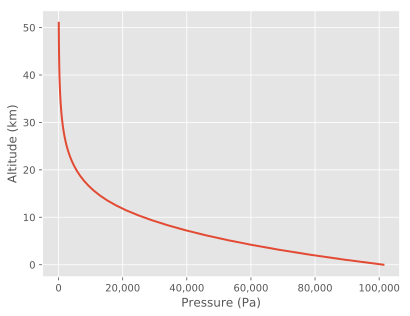

The average (standard or atmospheric) pressure at sea level is 101.325 kPa. This pressure decreases as the altitude above sea level increases. To calculate this decrease in pressure, the geopotential height H is used to compensate for the decrease of gravity above the Earth's surface. In the equation below, the average radius of the Earth is R0= 6356.766 km and z represents the altitude in km.
$$ H = (R_0 \cdot z) / (R_0 + z) $$Below a geopotential altitude of 51 km, the standard temperature T in Kelvin and pressure P in Pa can be calculated with the equations shown below.
$$ \begin{align} T &= 288.15 - (6.5\, H) & H \leq \text{11 km} \\ T &= 216.65 &\text{11 km} \leq H \leq \text{20 km} \\ T &= 216.65 + (H - 20) &\text{20 km} \leq H \leq \text{32 km} \\ T &= 228.65 + 2.8\, (H - 32) &\text{32 km} \leq H \leq \text{47 km} \\ T &= 270.65 &\text{47 km} \leq H \leq \text{51 km} \end{align} $$ $$ \begin{align} P &= 101.325\, (288.15 / T)^{–5.255877} & H \leq \text{11 km} \\ P &= 22.632 \exp(-0.1577\, (H - 11)) & \text{11 km} \leq H \leq \text{20 km} \\ P &= 5.4749\, (216.65 / T)^{34.16319} & \text{20 km} \leq H \leq \text{32 km} \\ P &= 0.868\, (228.65 / T)^{12.2011} & \text{32 km} \leq H \leq \text{47 km} \\ P &= 0.1109 \exp(-0.1262\, (H - 47)) & \text{47 km} \leq H \leq \text{51 km} \end{align} $$The above equations are implemented in atmpressure.py to plot
the change in pressure vs altitude. The example code is available on GitHub.

The equations presented in this article are from "Practical Meteorology" by Roland Stull. An article about "Barometric Pressure" on Wikipedia also provides information on atmospheric pressure.